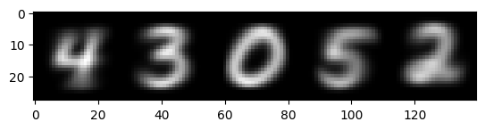
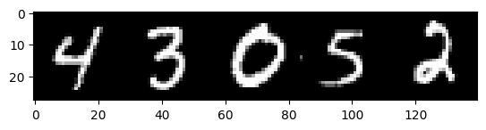
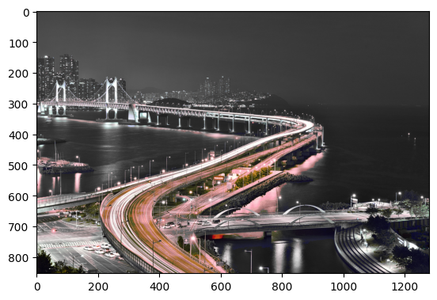

import numpy as np
import pandas as pd
import matplotlib.pyplot as plt
import urllib.request
import requests
import PIL
import io09wk-2: 중간고사

1. 학번소개 – 40점
- 20점, (2) 20점
아래의 코드를 실행하여 MNIST 자료를 불러오라.
# URL 설정
url = 'https://github.com/guebin/PP2023/raw/main/posts/02_DataScience/mnist.npz'
# URL에서 파일 다운로드
urllib.request.urlretrieve(url, './mnist.npz')
# 데이터 로드
data = np.load('./mnist.npz')
xtrain, ytrain, xtest, ytest = data['x_train']/255, data['y_train'], data['x_test']/255, data['y_test']
# mnist.npz 삭제
!rm mnist.npz(1) xtrain, xtest, ytrain, ytest 의 shape은 각각 아래와 같다.
xtrain.shape, xtest.shape, ytrain.shape, ytest.shape((60000, 28, 28), (10000, 28, 28), (60000,), (10000,))xtrain, xtest를 합쳐서 shape이 (70000,28,28) 인 numpy array를 생성하고 이것을 X에 저장하라. 저장된 X에서 각 숫자의 평균이미지를 구하고 평균이미지를 좌우로 붙여 본인의 학번 마지막 5자리를 출력하라. (충남대 학생들은 충남대 학번으로 쓰셔도 괜찮습니다)
(풀이)
학번 마지막 5자리가 43052인 경우 출력예시는 아래와 같다.
plt.imshow(img,cmap="gray")
(2) (1)에서 구한 평균이미지와 가장 차이가 작은 이미지를 숫자별로 찾고, 이를 이어서 (1)처럼 본인의 학번 마지막 5개의 숫자를 출력하라. 이때 평균이미지와 가장 차이가 작은 이미지는 픽셀별로 차이를 제곱한뒤 평균을 내서 계산한다. (07wk-2 // 5.numpy활용 // C.MNIST data // (5)번 문항을 참고할 것)
(풀이)
plt.imshow(img,cmap="gray") # 시각화예시
2. 아름다운 부산 – 40점
(1)-(2) 모두 맞출 경우만 정답으로 인정
아래의 코드를 실행하여 부산의 야경을 불러오라.
url = 'https://cdn.pixabay.com/photo/2016/10/17/07/53/busan-night-scene-1747130_1280.jpg'
img = np.array(PIL.Image.open(io.BytesIO(requests.get(url).content)))/255
plt.imshow(img)img.shape(854, 1280, 3)(1) 위의 이미지의 Red,Green,Blue 에 해당하는 array 를 변수 R, G, B 에 저장하라. 아래의 공식을 이용하여 새로운 numpy array Gray를 만들고 이를 출력하라.
\[Gray = 0.2989 \times R + 0.5870 \times G + 0.1140 \times B\]
여기에서 R,G,B,Gray는 모두 shape이 (854,1280) 인 numpy array 이다.
(풀이)
plt.imshow(Gray,cmap="gray") # 시각화예시
(2) R,G,B 에 대하여 아래의 슈도-알고리즘과 동등한 처리를 np.where을 이용하여 수행하라. 편의상 아래의 알고리즘에서 R,G,B는 변수 Ch로 생각한다.
ch_min = np.min(Ch[0:587, 948:1210])
ch_max = np.max(Ch[0:587, 948:1210])
for i in range(854):
for j in range(1280):
if ch_min < Ch[i,j] < ch_max:
Ch[i,j] = Ch[i,j]
else:
Ch[i,j] = Gray[i,j]위의 알고리즘을 각각 R, G, B에 적용하였으면 변화된 R,G,B를 합쳐서 하나의 칼라이미지를 만들고 출력하라.
(풀이)
# 시각화예시
3. 공든탑쌓기 – 120점
규빈과 다호가 블록을 사용하여 탑을 쌓는다. 규빈은 한 번에 2개의 블록을 사용하여 탑을 쌓지만, 실수로 탑을 무너뜨릴 확률이 50%이다. 한 번 무너진 탑은 다시 처음부터 쌓아야 한다. 다호는 한 번에 1개의 블록을 사용하여 신중하게 탑을 쌓는다. 다호는 천천히 탑을 쌓지만 실수로 탑을 무너뜨리지 않는다.
(1)번은 0점, (2)-(3)을 모두 맞출경우 60점, (2)-(4)를 모두 맞출경우 120점
(1) 규빈과 다호가 2층 높이의 탑을 먼저 쌓는 내기를 하였다고 하자. 탑을 쌓을수 있는 기회는 2회 준다. 이 내기는 누가 유리한가? 시뮬레이션을 통하여 근거를 설명하라. (둘이 동시에 탑을 쌓을경우 무승부로 판단한다.)
(2) 규빈과 다호가 10층 높이의 탑을 먼저 쌓는 내기를 하였다고 하자. 탑을 쌓을수 있는 기회는 10회 준다. 이 내기는 누가 유리한가? 시뮬레이션을 통하여 근거를 설명하라. (둘이 동시에 탑을 쌓을경우 무승부로 판단한다.)
(3) 규빈은 (2)의 게임을 반복하다가 본인이 불리하다는 사실을 알고 분노했다. 흑화한 규빈은 매번 50%의 확률로 다호의 탑을 공격하기로 하였다. 공격 성공률은 60% 이며 공격이 성공시 다호의 탑은 모두 무너진다. (단, 공격시 규빈은 탑을 쌓을 수 없다) 규빈과 다호에게 탑을 쌓거나 상대방의 탑을 공격할 기회를 20회 준다고 가정하자. 이 내기는 누가 유리한가? 시뮬레이션을 통하여 근거를 설명하라. (둘이 동시에 탑을 쌓거나 둘 모두 탑을 쌓지 못할 경우 무승부로 판단한다.)
(4) 규빈은 공격을 하는사이에 본인의 탑을 쌓지 못하게 되자 전략을 바꾸었다. 다호의 탑을 관찰하며, 다호의 탑이 5층 이상인 경우에만 공격하기로 하였다. 이 경우 규빈과 다호에게 탑을 쌓거나 상대방의 탑을 공격할 기회를 20회 준다고 가정하면 누가 유리한가? 시뮬레이션을 통하여 근거를 설명하라. (둘이 동시에 탑을 쌓거나 둘 모두 탑을 쌓지 못할 경우 무승부로 판단한다.)